SAM Pipeline
An automated Python pipeline that builds Social Accounting Matrices. Each one is a balanced table that records every payment in a country’s economy for a year. This is my current research in Northeastern’s Financial Stress Lab, supported by a PEAK Summit Fellowship.
PEAK Summit Fellowship · Northeastern Undergraduate Research and Fellowships
“A Reproducible Pipeline for Multi-Country Social Accounting Matrix Construction”
- Role
- Undergraduate researcher, PEAK Summit Fellow
- Advisors
- Prof. Mikhail Oet (PI), Prof. Paul Chiou
- Dates
- Phase 2, Jul 2026–present
- Stack
- Python, scipy, cvxpy, pandas, pytest
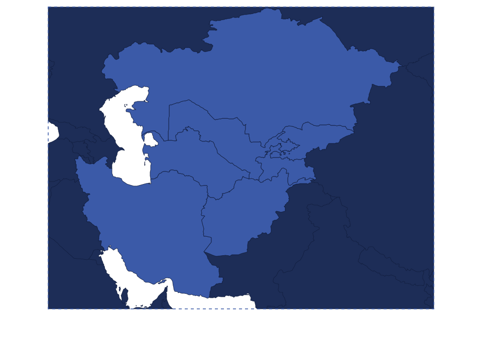
KazakhstanKyrgyzstanUzbekistanTajikistanTurkmenistanAfghanistanIranUnited StatesMongoliaSri LankaEach line is trade between two of the 10 economies built so far. The pulse shows what linking the tables is for: following a shock in one country, here Kazakhstan, out to its trading partners.
Summary
A Social Accounting Matrix (SAM) is a square table of every payment made in a country’s economy in one year. Each account gets one row for the money it receives and one column for the money it spends. An account can be an industry, households, the government or the rest of the world. Every row total has to equal its column total, since every dollar received is a dollar spent or saved.
My pipeline builds these tables reproducibly from global input-output databases, which record what each industry buys from every other. Then it balances each table, checks it, and records where every number came from.
- 18 balanced SAMs so far. 17 cover 10 countries (the United States, Kazakhstan, Sri Lanka, Mongolia, Kyrgyzstan, Uzbekistan, Tajikistan, Turkmenistan, Afghanistan and Iran), and one covers Nigeria, which is shelved
- 140 accounts in every table, including 59 industries chosen by measurement
- Every account balances to better than one part in ten million
- Comparing two sources caught a $31.2bn error in a global database that had passed every check on its totals
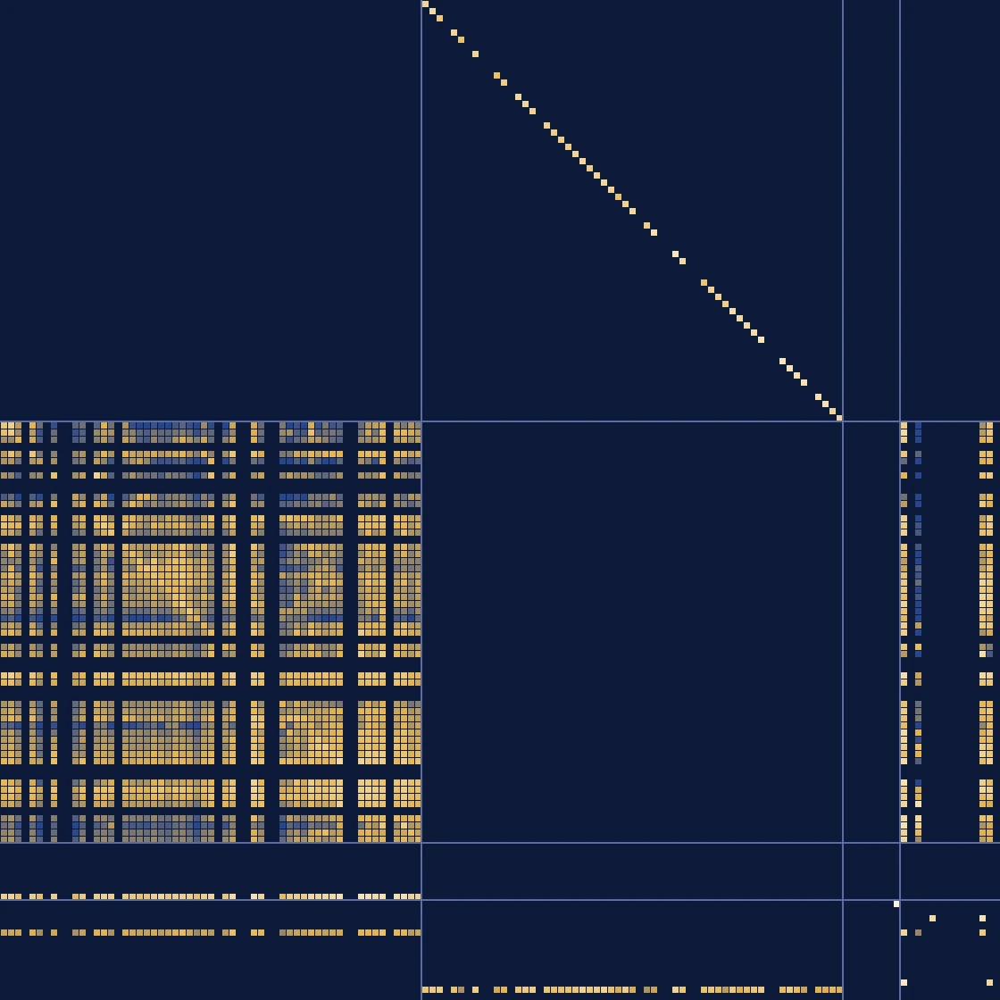
- Industries buy parts and services from each other
- Each industry sells its own product
- Industries pay out value added (wages and profit)
- Households, government and exports buy products
Each square is money the row receives from the column, and brighter means bigger. Every row adds up to its column.
Problem
The SAMs are there to calibrate an agent-based model for economic-statecraft research. That model, which is still to be built, will simulate how sanctions, export bans or a supply shock spread through an economy. It needs each economy’s real structure, such as how much of a country’s steel goes to construction, how much household income comes from wages, and how much an industry depends on imports. A SAM records exactly that in a form a model can read.

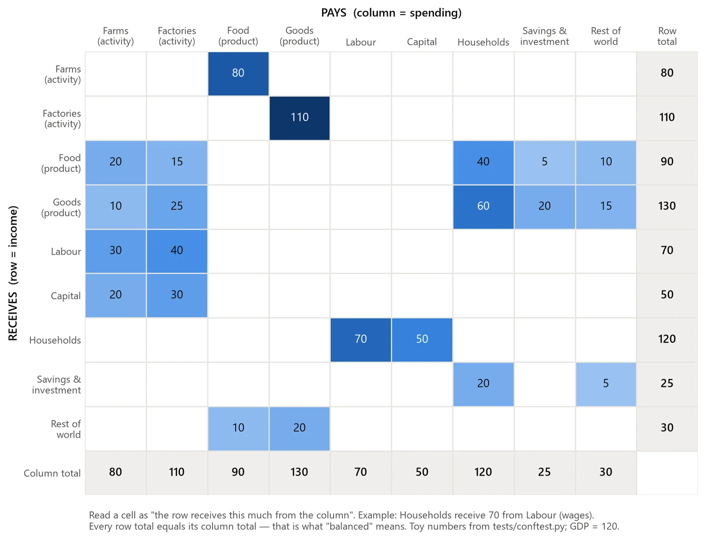
Building a good one is hard for four reasons.
- No single dataset is enough. One source has the trade detail and another splits income into wages and profit. The target region, Central Asia and the Indo-Pacific, is thinly covered by most of them.
- Sources disagree, so the raw table never balances. Forcing it to balance can quietly overwrite good data with guesses.
- The model needs every country at full detail. Lumping countries into composite regions like “rest of the world” won’t do.
- Every number has to be traceable, so that an estimate is never mistaken for a measurement.
This is the second phase of my research. The first, my GTAP trade stress model, exposed three limits in global trade tables, and I designed this pipeline around them.
More detail: how phase 1 shaped this project
The GTAP model pushed a supply cut through global trade tables. Checking its results exposed three limits. The tables lacked the income side of the economy, so the math needed a small correction term, and that term ended up deciding the results. Two countries also showed zero risk because they mine almost no metal ore, and the model only cut a country’s own mining, even though both import all the ore they use.
![Diagram in three boxes. Phase 1, the trade stress model of January to June 2026, used GTAP 10 and OECD ICIO data to model the 2010 Japan rare-earths episode. Checking its results exposed three limits: output approximated from intermediate flows only; a Leontief inverse that needed a regularization term, which ended up deciding the results; and zero stress for Germany and the UK, because they mine almost no metal ore and the model only cut a country’s own mining, though both import all the ore they use. These were carried into phase 2, the SAM pipeline: full tables with value added and final demand, cross-entropy balancing, GDP-identity and structural-plausibility gates, and cell-level provenance.](../assets/sam/project-arc.webp)
Design
Each build combines three kinds of input. A backbone database records who buys what from whom. Translator files map each backbone’s sectors onto one shared list. Referees are independent GDP figures that the finished table is checked against but never built from.

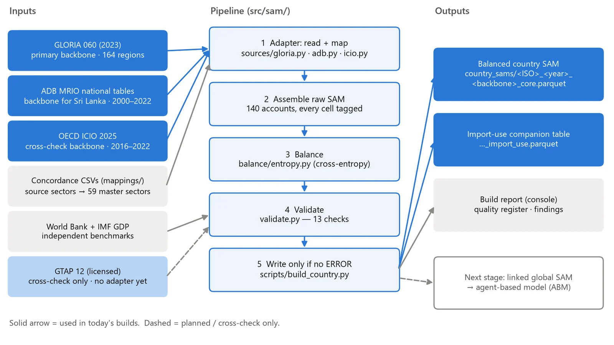
- Three backbones. GLORIA covers 164 regions and is the only one of the three that splits income into labour and capital. The Asian Development Bank’s tables cover countries the OECD folds into “rest of world”. The OECD’s ICIO is the cross-check. Each build uses one of them, and where another source covers the same country, it checks the build.
- A balancer that moves guesses before measurements. No maintained Python version of cross-entropy balancing (Robinson, Cattaneo and El-Said, 2001) existed, so I implemented it from the published formulation. Each cell is weighted by how trustworthy its source is, and an imputed cell absorbs about a hundred times the adjustment of an observed one.
- Solving the small problem instead of the big one. The direct formulation solves for every cell, a few thousand per country, and it didn’t finish balancing one country in ten minutes. Its dual, an equivalent form of the same problem, solves for one number per account. That’s 140 numbers, and it balances a country in under a second. The two answers agree to 2×10−11.
- Provenance on every cell. Each number records its source and how it was derived, on a six-level scale from observed to scenario. A build that contains an unflagged value fails validation.
More detail: source coverage, the 59 sectors, and the balancer’s rules

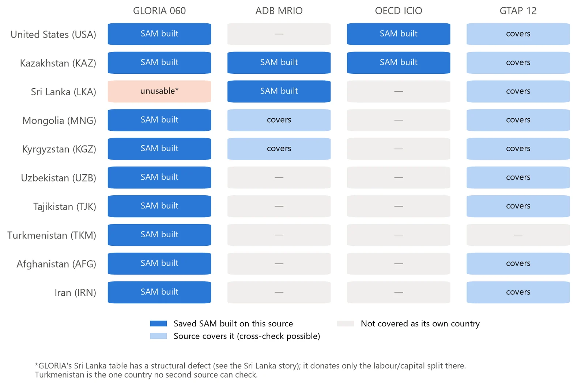
59 sectors, chosen by measurement. A group of related sectors is split apart only if one of them is at least 1% of a country’s output somewhere, and every member is measured reliably, at 2% reconciliation error or less. The extra detail goes where economic statecraft bites. Crude oil is split from natural gas (crude alone is 8.1% of Kazakhstan’s output), pipelines are their own transport mode, and banking is separate from insurance. Copper ore gets its own sector too, after clearing the gate on Mongolian data at 13.38% of output. Uranium didn’t, at 0.11% of Kazakh output, so it stays grouped, and a test makes sure it does.

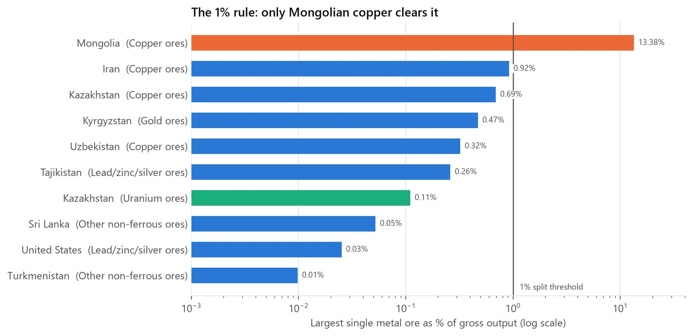
The balancer’s rules. A cell that starts at zero stays zero unless it is deliberately opened, and flows that the accounting structure rules out can never be opened. The six provenance levels run from observed through allocated and imputed to scenario. A test checks that the direct and dual answers match.
The math
Five formulas do the work in this pipeline. For each one, here’s what it says in plain words and why I use it. The last, the Leontief matrix, is also what my trade-stress project ran on.
1. The accounting identity
Tij is what account j pays account i, so row i is what account i receives and column i is what it spends. ri and ci are those two totals.
In plain words. Every account’s income has to equal its spending, like a budget that balances to the cent. The check allows a gap of at most one part in ten million of the account’s size.
Why I use it. It’s the rule that makes a table a SAM. A model run on a table that doesn’t balance would create or lose money out of nowhere, so a build that misses it fails.
2. Cross-entropy balancing
T0 is the raw table from the sources, and wij is how much I trust cell ij, high for observed cells and low for imputed ones. KL is the Kullback-Leibler divergence, which measures how far a number has moved in proportion to its size. The table also has to satisfy the identity above.
In plain words. Find the balanced table closest to the raw one, where moving a trusted cell costs more than moving a guessed one.
Why I use it. The sources disagree, so the raw table never balances on its own. RAS, the classic method, treats every total as exact and stops converging when sources conflict. Cross entropy treats them as estimates, reports which ones had to move, and keeps a cell that starts at zero at zero, so it never invents a flow.
3. Solving it through the dual
λi is one number per account, found by the solver.
In plain words. At the best answer, every cell is its starting value times a factor set by just two numbers, one for the account that receives and one for the account that pays.
Why I use it. That shrinks the problem from a few thousand cells to 140 account numbers. The direct version didn’t finish one country in ten minutes, and this one balances a country in under a second. The solver also knows it’s done exactly when every account balances.
4. GDP from the income side
VA is value added, the wages and capital income every industry pays. GDPref is an official figure the table is never built from.
In plain words. Add up what the economy pays workers and owners of capital, plus taxes on production and products, minus subsidies. That’s GDP measured from the income side.
Why I use it. A table can balance perfectly and still be the wrong size, and comparing it with an outside figure catches that. A gap up to 0.05% passes, and a gap over 0.5% puts a review flag on the build.
5. The Leontief matrix, and two checks built on it
Zij is what industry j buys from industry i, xj is industry j’s output, and VAj is its value added. aii, the diagonal of A, is the share of an industry’s output that it buys back as its own input. The checks apply to industries that are at least 0.5% of the economy.
In plain words. A, the Leontief matrix, says how many cents of each input an industry needs for every dollar it makes. L adds up every round of that buying, which is how an input-output model follows a change through a whole economy. A Leontief system needs aii below 1 to work at all, so anything over 0.60 gets a human look. Value added also has to sit between 10 and 98 cents per dollar of output.
Why I use it. A table can balance and match GDP and still be wrong inside. GLORIA’s Sri Lanka table had its government industry buying back 0.884 of its own output, and it passed every check that existed at the time. The pipeline doesn’t run L itself. It checks that A is sound, because any model built on these tables will rely on it. My trade-stress project ran on L directly.
Build
I’m building it in layers, because each layer needs the one before it to be stable. The backbones, the split between wages and profit, and the balancing are done. Government and taxes are in progress this fall, and linking the countries to each other hasn’t started.
One command builds a country end to end, and Sri Lanka takes about 20 seconds. If a build hits an error it writes nothing, so a broken table can never replace a good one.
More detail: the build layers, the 140 accounts, and the tools
| Layer | What it adds | Status |
|---|---|---|
| 1. Backbone | Production, final demand and trade, from GLORIA, ADB or OECD ICIO | Done, with three adapters and 10 countries |
| 2. Income and institutions | Wages versus profit, plus government, taxes and transfers | Wages and profit done. Government and taxes in progress this fall |
| 3. Balance each country | Cross-entropy balancing and validation | Done |
| 4. Link the countries | Reconciled trade between the country tables | Not started |
| 5. Extensions | Energy, employment and finance, plus households by income decile | Not started. Household deciles planned this fall |

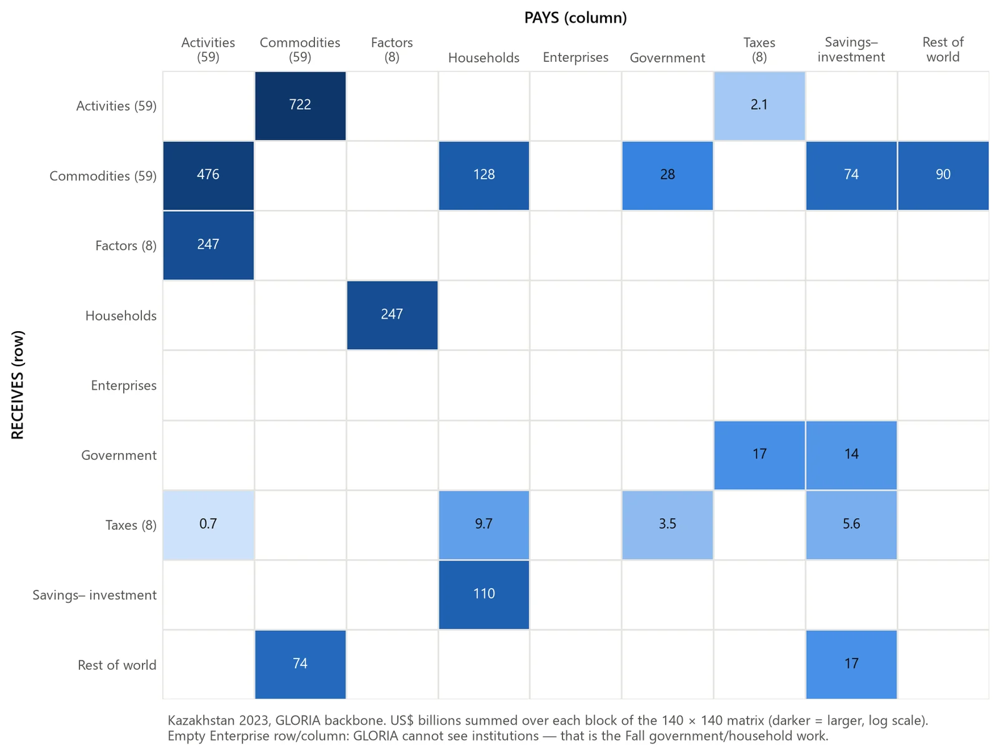
- A full SAM has 140 accounts: 59 industries, 59 products, 8 kinds of income, households, enterprises, government, 8 tax accounts, savings and investment, the rest of the world, and a statistical-discrepancy account that keeps unexplained gaps out of real accounts.
- The OECD and ADB downloads are pinned by SHA-256 hash and retrieval date, so the pipeline notices if a source file changes. GLORIA’s full table is about 5.8 GB, so the pipeline reads it once per country and caches that slice.
- It’s written in Python, with scipy and cvxpy for the optimization, pandas and Parquet for the data, matplotlib for the figures, and pytest for the tests.
Testing and iteration
Every build runs 13 automated checks, from balance and the GDP identity to two structural-plausibility tests, and 344 automated tests guard the code (passing as of 9 October 2026). The two structural thresholds were measured from real builds, and a threshold never gets widened just to silence a finding.
When every check passes and the data is still wrong. For a month, the Sri Lanka build on GLORIA looked like the best pilot. Its GDP was within 0.6% of the World Bank figure, and every check was green. Building it again on a second source, ADB, exposed the problem. GLORIA records Sri Lanka’s government sector buying $31.2bn of its own output, about 21.6% of the country’s gross output. It also records $10.3bn of pipeline transport in a country with no pipeline network. Each error is an output and an input at the same time, so the two sides cancel out of GDP and out of the balance condition. That’s why nothing caught them.

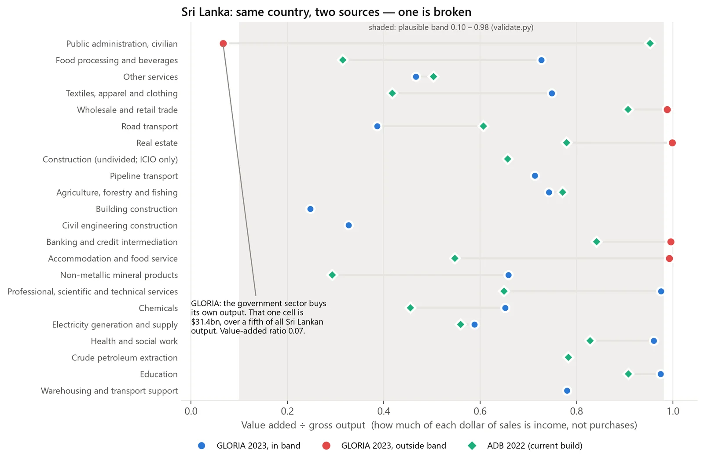
So matching totals don’t prove the structure is right. Sri Lanka now builds on ADB, and GLORIA supplies only the split between wages and profit. On ADB, apparel, the country’s largest export, is 10.2% of output, against 3.6% on GLORIA. Two new checks now catch this kind of error from a single source, which matters because most of the target region has no second source.
A second check. On 30 September an AI tool (Codex) audited and revised the code, and on 1 October a second AI tool (Claude Code) checked that work. The audit found a real error in the GDP formula, which counted relocated subsidies as tax revenue. Every reported GDP gap was recalculated with the fixed formula, and all 18 saved tables still balance below 10−7 with no negative cells.
Two big GDP gaps turned out to come from the data, not the pipeline. Nigeria came out 28% low because a 2025 rebasing of its national accounts raised its 2019 GDP by about 42%. Against the old accounts the gap is 1.8%, and Nigeria stays shelved. Turkmenistan came out +53.7% against the World Bank and −4.5% against the IMF, which converts at a different exchange rate.
More detail: the 13 checks, the new structure checks, and the second benchmark
The 13 checks cover balance, the GDP identity, factor payments, control totals, the external account, how much balancing moved, non-finite values, negative cells, unlabelled provenance, empty accounts, the second GDP benchmark, and two structural-plausibility tests. The test suite includes stress tests that feed real pilot data with deliberately broken inputs.

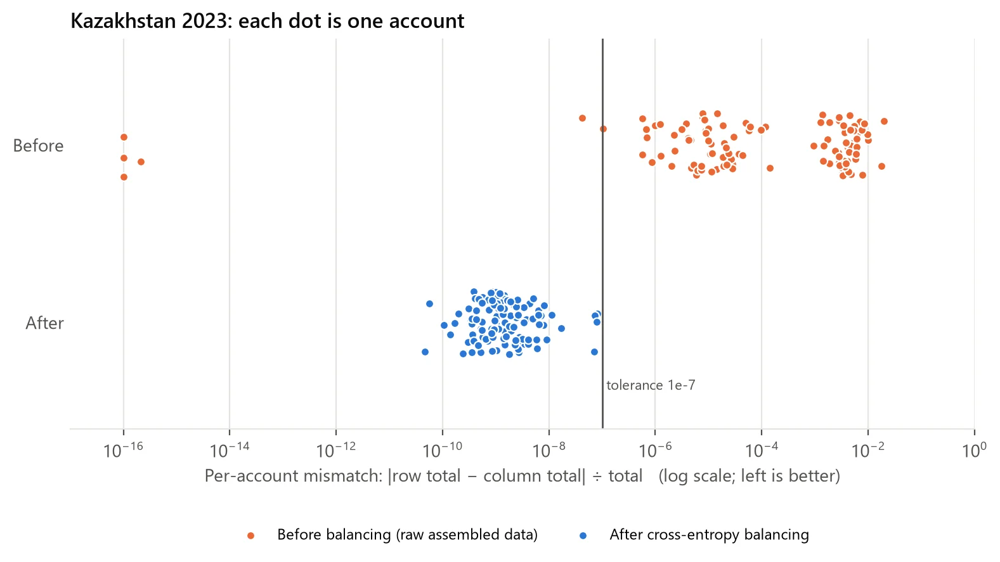
On ADB, the Sri Lanka table needed almost no balancing. Of the two new checks, one sets a plausible range for value added (an industry’s output minus the inputs it buys) over output, and the other caps how much any sector can buy back of its own output.
The same rebasing mechanism later explained the gap from Uzbekistan’s 2024 revision. After Turkmenistan, every build reports a second GDP benchmark next to the World Bank figure. Only the World Bank figure decides whether a build passes, though, so a gap can’t be argued away after the fact.
Results
GDP is the headline check. The income a SAM records should match the official figure for that country and year, and any gap over 0.5% puts a review flag on the build so someone has to explain it.
| Build | Gap to World Bank GDP | What explains it |
|---|---|---|
| Kazakhstan 2023, GLORIA | +0.76% | Close match |
| Sri Lanka 2022, ADB | −2.82% | Within 3%. This is the Sri Lanka build in use |
| United States 2019, OECD ICIO | −0.05% | Close match |
| United States 2023, GLORIA | +3.33% | Product taxes are probably counted twice, since GLORIA’s US value added alone matches GDP to 0.001%. Inferred, not yet confirmed |
| Uzbekistan 2023, GLORIA | −15.71% | −0.28% against the accounts before Uzbekistan’s 2024 revision |
| Turkmenistan 2023, GLORIA | +53.69% | −4.53% against the IMF, which uses the official exchange rate |
| Kyrgyzstan 2023, GLORIA | −8.92% | Not yet explained. ADB also covers Kyrgyzstan, so it can be cross-checked |
The GDP chart for every build, how much of each table comes straight from data, and who earns the value added are in the gallery below. The charts use the 14 current builds. The 18 saved tables also include superseded and shelved ones, such as the GLORIA Sri Lanka table and Nigeria.
What I’d change, and what’s next
- Start version control on day one. The project has no Git history, so the record of every change is file timestamps and dated recovery copies. Now every substantive change gets a recovery copy and a tested rollback first.
- Check the structure from the start, as well as the totals. The ratio checks that would have flagged Sri Lanka right away only arrived after a second source exposed the problem.
Next, under the PEAK Summit Fellowship (fall 2026), I’m adding government, tax and transfer accounts, starting with Sri Lanka 2022, and splitting households by income decile using World Bank PIP data. The fall ends with a final report and abstract for RISE, Northeastern’s research expo. Later, the country tables get linked through their trade into one global web, with every country at full detail.
More detail: the plan for government accounts
The research for the government accounts is done. The central bank’s and statistics department’s 2022 tables are downloaded and checked, and four build options were compared. The recommended option, which isn’t adopted yet, reconciles the fiscal and national-accounts totals first and then fits the ADB detail to them.
Gallery
More charts (6): GDP for every build, data provenance, who earns value added, and more
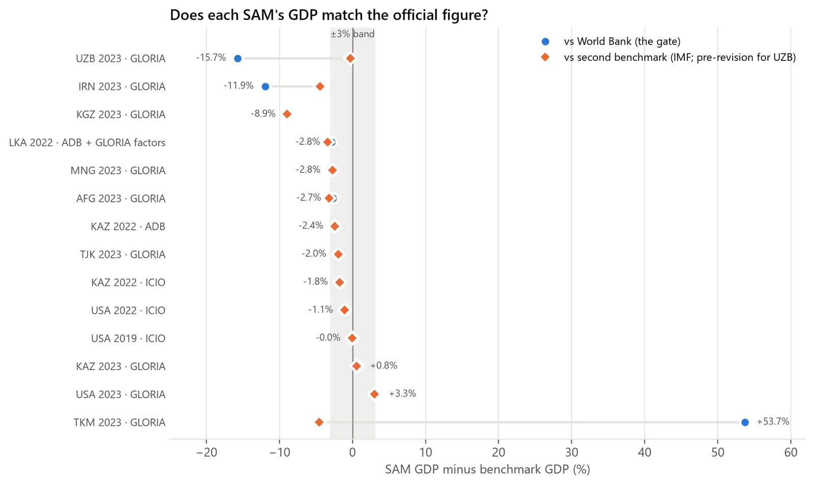
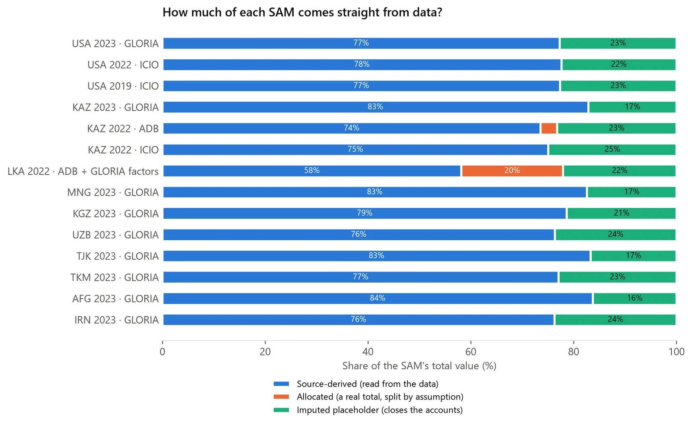
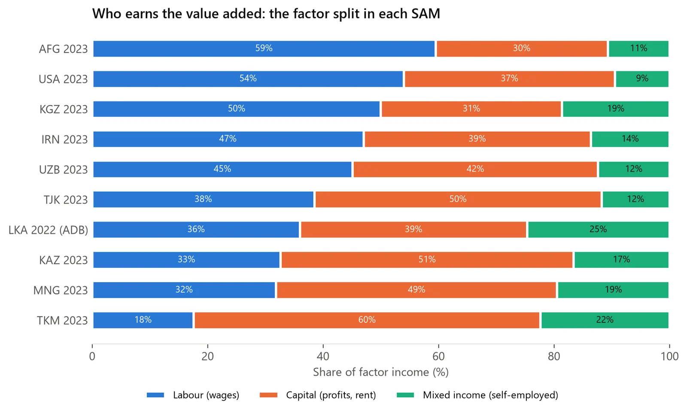
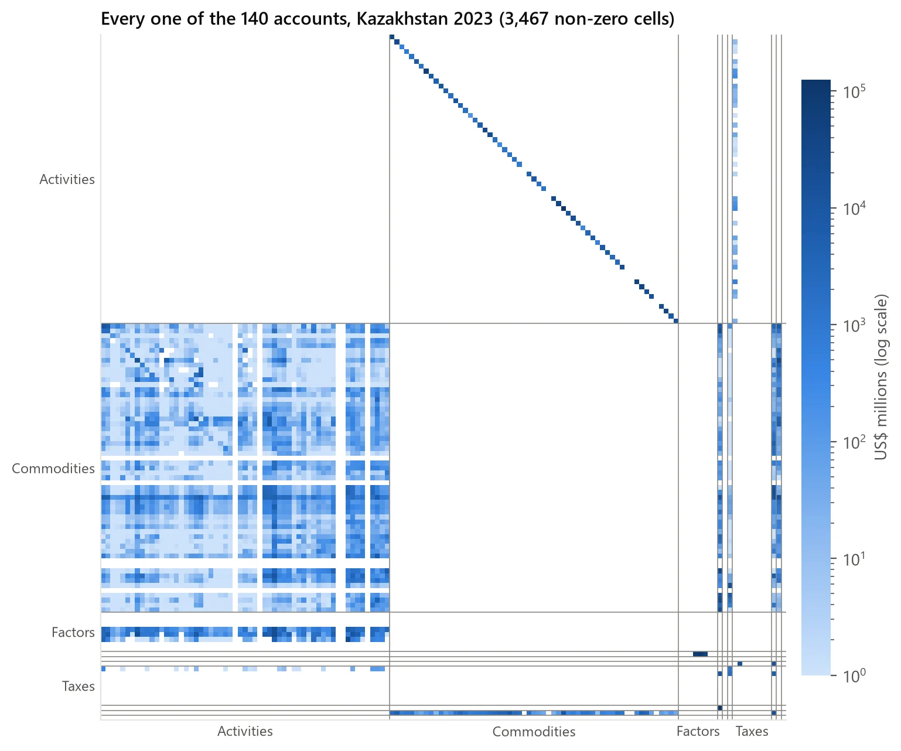
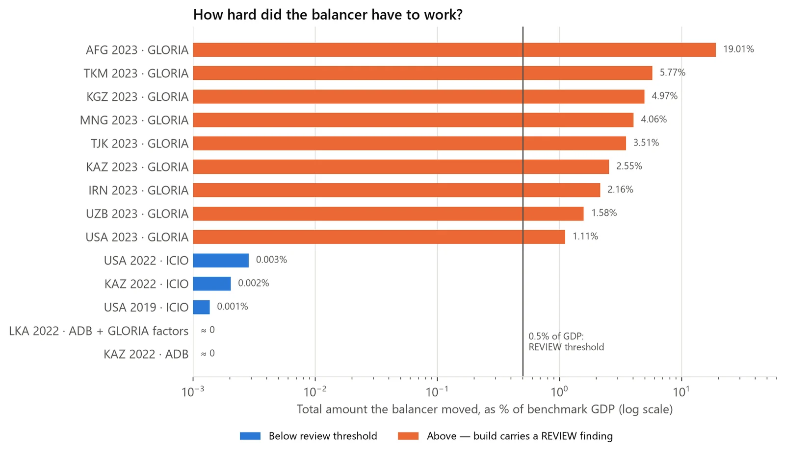
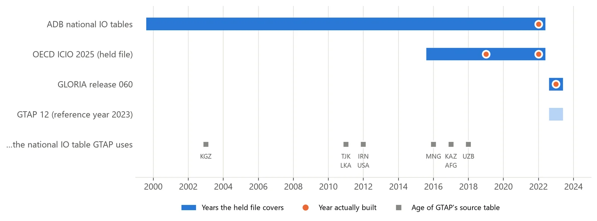